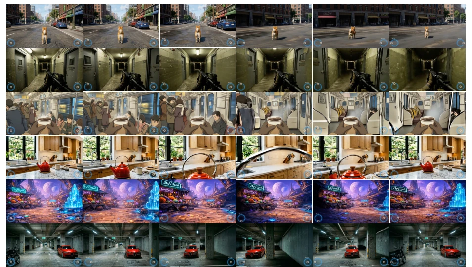
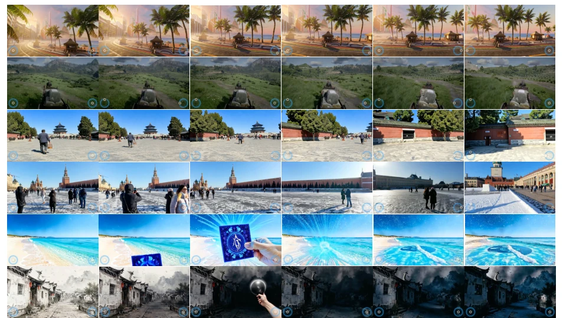

← 返回← Back
AlayaWorld: Interactive Long-Horizon World Modeling - Full Technical Report (v1.1)
AlayaWorld Team, Kaipeng Zhang, Chuanhao Li, Yifan Zhan, Yongtao Ge, Yuanyang Yin
abspdf
论文点评Review
AlayaWorld v1.1 这次算是把“一致性”刻进了 DNA 里。之前的版本可能还在纠结怎么让相机飞得稳，这次直接把 AdaLN 砍了，让几何说了算。虽然视频质量没拿第一，但那个 Consistency 分数 89.5 确实让人眼红，毕竟长视界交互里“别崩”比“好看”更难。不过物理交互还是有点虚，Causal Fidelity 只有 65.1，说明它可能更擅长“看”而不是“动”。这模型像是个精致的导游，路线规划得明明白白，但要是让你真去搬个砖，它可能还在算折射率。
—
研究动机Motivation
长视界交互生成的核心痛点在于“幻觉”和“不一致”。之前的 AlayaWorld 虽然能跑，但 conditioning signals（文本、时空记忆、相机控制）走的是不同路径，导致生成的 latent 和条件在 temporal structure 和 latent representation 上对不上。比如相机控制靠 AdaLN 单独注入，而视觉条件独立编码，这种割裂让模型在推理时容易“精神分裂”。此外，基于 DA3 的深度 warping 空间记忆 [1] 在长序列中容易累积误差。作者希望统一编码结构，让条件信号和生成内容在因果 VAE 空间里“同频共振”，解决长视界下的几何漂移和视觉断裂问题。
—
方法Method
整体架构维持 backbone 和 chunk-wise autoregressive 不变，重点重构 conditioning 和 memory。1. 空间记忆：抛弃 DA3 深度 warping，改用 streaming 3D point-cache renderer (ViGeo [3])，每生成 chunk 后注册 3D 点，下次渲染时基于规划轨迹重渲染，保证几何一致性。2. 条件编码：视觉条件不再单帧编码，而是用 9-frame 窗口（含前 8 帧）经 causal VAE 编码，确保 temporal context 匹配。3. 时序记忆：像素对齐，4 个 latent 对应 25 帧，消除边界错位。4. Hard Dropout：直接移除 memory tokens 而非置零，避免序列结构泄露信息。5. VAE 统一：训练和推理使用相同像素-latent 接口，减少 stage-specific 差异。6. 相机控制：移除 AdaLN，完全依赖重渲染的空间条件提供视角信息，将相机控制耦合到场景几何中。
—
实验Experiments
在 WBench [2] 导航 split 上测试 158 个案例。对比 Yume 1.5, Genie 3 等。Consistency: 89.5 分全场最佳，Perspective 和 Geometric 表现突出，证明几何稳定性强。Video Quality: 79.1 分，Imaging 67.7 分不错，但 Flickering/Dynamic 略逊于 Genie 3。Interaction: Navigation 80.0 分，响应尚可。Weakness: Physical 类别平均 63.1 分，Causal Fidelity 65.1 分，说明物理交互建模仍是短板。Qualitative: 图 1 和图 2 展示了不同场景下的连贯性和结构保持。
—

Figure 1 Qualitative results of AlayaWorld on WBench [2].

Figure 2 Qualitative results of AlayaWorld across different scenes.